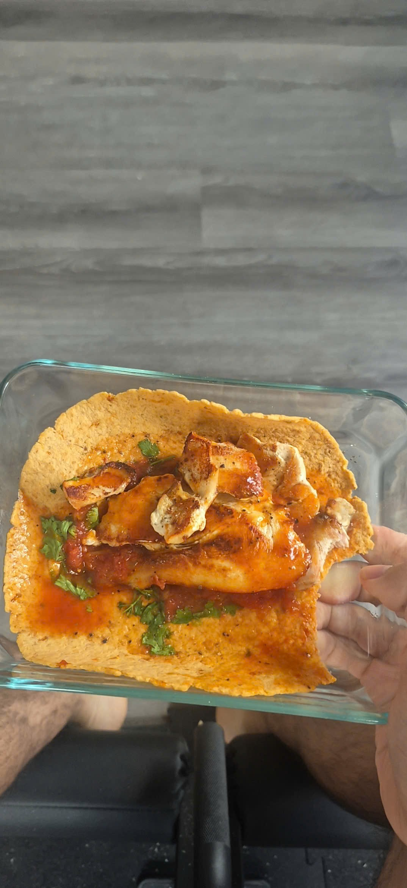

Chicken Salsa Wrap recipe

Ingredients
- Wraps
- Chicken breast but substitution for other meats work
- Salsa
- Cilantro
- Salt
- Pepper
- Hot sauce
Steps
- Get 1 wrap and lay neatly on plate
- Use a pair of scissors to quickly cut a serving of cilantro and place in wrap
- Get a serving of a salsa and pour onto cilantro in wrap
- Microwave plate for 45 seconds
- Prepare cooking pan by using cooking spray & place on stovetop
- Preheat stovetop to proper temperature (ex: level 7)
- Cut 112 grams of chicken breast into flat pieces and cook both sides for 4 minutes (if substituting, make sure you cook meat thoroughly)
- Take out the plate with the microwaved wrap and pour chicken breast pieces inside wrap
- Season contents of the wrap with salt, pepper, and hot sauce
- Enjoy the chicken salsa wrap!